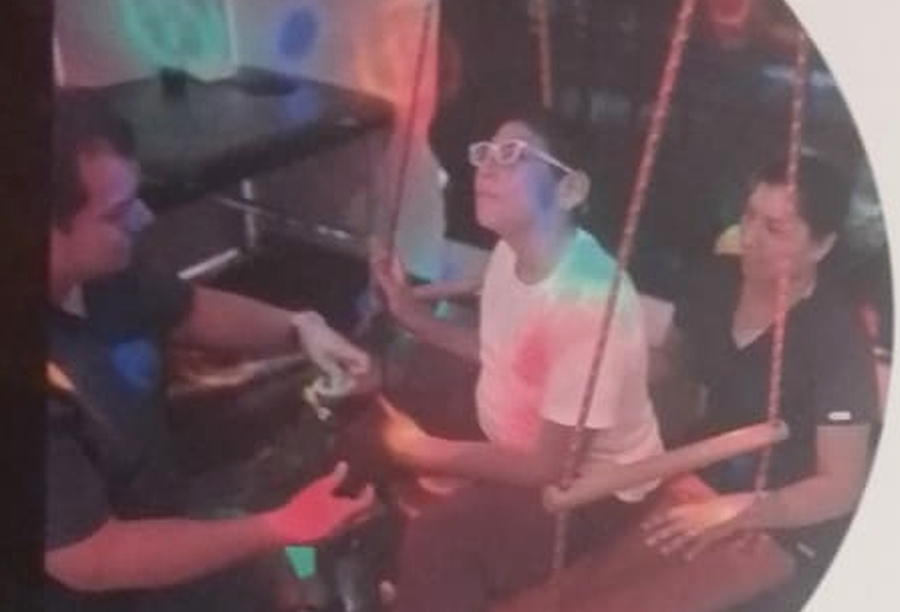
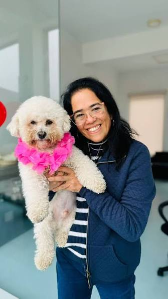

Una mirada centrada en la persona
Diseñamos programas individualizados de acuerdo con las fortalezas, necesidades e intereses de cada estudiante.
Más de 20 años acompañando a niños y jóvenes con discapacidad y multidiscapacidad desde una mirada integral, interdisciplinaria y centrada en la persona.

Diseñamos programas individualizados de acuerdo con las fortalezas, necesidades e intereses de cada estudiante.
Un espacio pensado para experiencias multisensoriales controladas y adaptadas a las necesidades individuales.
Conversatorios, talleres y orientación para fortalecer el trabajo conjunto entre familia y comunidad educativa.
ARS VITA es un Centro de Educación Básica Especial con más de 20 años de experiencia, comprometido con brindar una educación integral y de calidad a niños y jóvenes con discapacidad y multidiscapacidad.

Ser un Centro reconocido por brindar una atención educativa y terapéutica de excelencia, promoviendo la inclusión y el desarrollo integral de nuestros estudiantes. Aspiramos a formar personas autónomas, participativas y capaces de desenvolverse en su entorno.
Promover el desarrollo de capacidades de nuestros estudiantes, fomentando su autonomía, participación e inclusión en los ámbitos familiar, educativo y social, según sus posibilidades.
Cada estudiante aprende de manera diferente. Por ello, diseñamos programas individualizados de acuerdo con sus fortalezas, necesidades e intereses.
Consideramos las distintas dimensiones del desarrollo y el contexto en el que cada estudiante aprende y participa.
Favorecemos la coordinación entre los profesionales, el equipo educativo y la familia.
Adaptamos objetivos, apoyos y estrategias a las características y posibilidades de cada estudiante.

Promovemos aprendizajes significativos mediante estrategias activas, apoyos visuales, comunicación funcional, estimulación multisensorial y trabajo colaborativo con la familia y la comunidad educativa.
La información de esta sección se basa en el material institucional proporcionado para el proyecto.
 01
01Apoyo especializado para favorecer la comunicación y las posibilidades de expresión de cada estudiante.
 02
02Con enfoque en integración sensorial y participación funcional en actividades significativas.
 03
03Intervenciones orientadas al movimiento, participación y desarrollo de habilidades funcionales.
Acompañamiento para favorecer recursos emocionales, conductuales y de adaptación.
Espacios para desarrollar herramientas de interacción, comunicación y participación social.
Orientación y acompañamiento para fortalecer el trabajo conjunto con la comunidad educativa.
ARS VITA también comparte su experiencia con familias, acompañantes, mediadores e instituciones educativas.
Para acompañantes y mediadores en inclusión educativa.
En atención a la diversidad e inclusión educativa.
Al personal involucrado en la atención de estudiantes con necesidades educativas especiales.
En las especialidades que ofrece ARS VITA, según las necesidades de cada persona.


“Cada estudiante aprende de manera diferente.”
Una mirada que orienta nuestro trabajo.Un espacio especialmente diseñado para ofrecer experiencias multisensoriales controladas que favorecen la relajación, el bienestar emocional, la regulación sensorial, la comunicación y el aprendizaje.

La propuesta institucional señala que la sala permite adaptar los estímulos a las necesidades individuales de cada persona.
Completa estos datos iniciales y el equipo de ARS VITA podrá conocer mejor tu consulta y orientarte sobre los siguientes pasos.
Educadora especializada en Educación Especial · Directora de ARS VITA
Su trayectoria profesional está vinculada a la Educación Especial, la formación de docentes y el acompañamiento de estudiantes y familias. Desde ARS VITA impulsa una mirada educativa y terapéutica centrada en la persona, la autonomía, la participación y la inclusión.

Presentamos su recorrido en orden cronológico, tomando como referencia registros institucionales y académicos disponibles públicamente.
Concluye sus estudios de Educación en la Universidad Femenina del Sagrado Corazón (UNIFÉ), institución que posteriormente reconocería su trayectoria como exalumna destacada.
Inicia su experiencia profesional en el ámbito de la educación estatal y desarrolla progresivamente su especialización en Educación Especial.
Desarrolla funciones como especialista en la UGEL 07, experiencia que fortalece su trabajo en el campo de la atención educativa a estudiantes con necesidades educativas especiales.
Su trayectoria académica incluye docencia en UNIFÉ, participación como conferencista y contribuciones relacionadas con educación y familia. También figura como autora de trabajos académicos sobre problemáticas que afronta la familia.
UNIFÉ registra su participación en un equipo de formadores que capacitó a docentes de Educación Especial en distintas ciudades del país, entre ellas Cusco, Trujillo y Huancayo.
Junto con Giuliana De Lorenzi, compañera de promoción de UNIFÉ, participa en la creación de ARS VITA. Las fuentes históricas disponibles sitúan el inicio del proyecto en 2003 y registran su autorización institucional en 2004.
Continúa vinculada a ARS VITA como directora, acompañando el desarrollo de una propuesta educativa y terapéutica orientada a estudiantes con discapacidad y multidiscapacidad, sus familias y su inclusión en distintos entornos.
UNIFÉ la ha presentado como exalumna destacada y registra su experiencia como docente, conferencista y especialista en el ámbito de la Educación Especial.
Comunícate con ARS VITA. Estaremos encantados de recibir tu consulta.